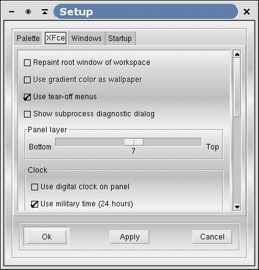

XFce tabfolder

Figure 3-2. XFce tabfolder
This dialog gives access to all XFce options :
Let XFce repaint the root window with the color of the screen button.
Use a gradient instead of plain color (only available if previous option is selected). This option has no effect on terminals with less that 256 colors, to reduce color usage.
Use tear-off menus (see popup menus, earlier in this manual).
Show subprocess diagnostic dialog. This option captures the output to stderr for programs started from xfce.
Layer of the panel. Choosing a higher layer makes the panel stay on top of all windows in a lower layer. You can choose layers from 1 to 12; 7 is the default value.
Digital clock on panel.
Use 24 hr clock.
Set the delay before tooltips appear.
The number of virtual screens available in XFce panel. From 2 to 10 screens are available.
The number of popup menus : You can choose to have from 0 up to 12 popup menus in XFce panel !
The size if icons displayed on the panel. If your pixmaps are larger than the values specified, the images are automatically scaled to fit the button.
The size of the icons in the popup menus. Same as above.
The font used in XFce applications (as for the palette, this font is shared by all XFce applications).
 | Notes: |
|---|---|
|